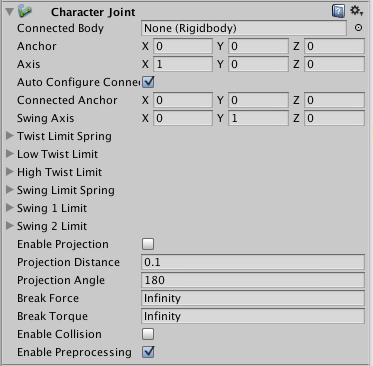

Character Joint
Character Joints are mainly used for Ragdoll effects. They are an extended ball-socket joint which allows you to limit the joint on each axis.
If you just want to set up a ragdoll read about Ragdoll Wizard.

Properties
| Property: | Function: |
|---|---|
| Connected Body | Optional reference to the Rigidbody that the joint is dependent upon. If not set, the joint connects to the world. |
| Anchor | The point in the GameObject's local space where the joint rotates around. |
| Axis | The twist axes. Visualized with the orange gizmo cone. |
| Auto Configure Connected Anchor | If this is enabled, then the Connected Anchor position will be calculated automatically to match the global position of the anchor property. This is the default behavior. If this is disabled, you can configure the position of the connected anchor manually. |
| Connected Anchor | Manual configuration of the connected anchor position. |
| Swing Axis | The swing axis. Visualized with the green gizmo cone. |
| Low Twist Limit | The lower limit of the joint. See below. |
| High Twist Limit | The higher limit of the joint. See below. |
| Swing 1 Limit | Limits the rotation around one element of the defined Swing Axis (visualized with the green axis on the gizmo). See below. |
| Swing 2 Limit | Limits movement around one element of the defined Swing Axis. See below. |
| Break Force | The force that needs to be applied for this joint to break. |
| Break Torque | The torque that needs to be applied for this joint to break. |
| Enable Collision | When checked, this enables collisions between bodies connected with a joint. |
| Enable Preprocessing | Disabling preprocessing helps to stabilize impossible-to-fulfil configurations. |

Details
Character joints give you a lot of possibilities for constraining motion like with a universal joint.
The twist axis (visualized with the orange access on the gizmo) gives you most control over the limits as you can specify a lower and upper limit in degrees (the limit angle is measured relative to the starting position). A value of -30 in Low Twist Limit->Limit and 60 in High Twist Limit->Limit limits the rotation around the twist axis (orange gizmo) between -30 and 60 degrees.
The Swing 1 Limit limits the rotation around the swing axis (visualized with the green axis on the gizmo). The limit angle is symmetric. Thus a value of 30 will limit the rotation between -30 and 30.
The Swing 2 Limit axis isn't visualized on the gizmo but the axis is orthogonal to the two other axes (that is the twist axis visualised in orange on the gizmo and the Swing 1 Limit visualised in green on the gizmo). The angle is symmetric, thus a value of 40 will limit the rotation around that axis between -40 and 40 degrees.
For each of the limits the following values can be set:
| Property: | Function: |
|---|---|
| Bounciness | A value of 0 will not bounce. A value of 1 will bounce without any loss of energy. |
| Spring | The spring force used to keep the two objects together. |
| Damper | The damper force used to dampen the spring force. |
| Contact Distance | Within the contact distance from the limit contacts will persist in order to avoid jitter. |
Breaking joints
You can use the Break Force and Break Torque properties to set limits for the joint's strength. If these are less than infinity, and a force/torque greater than these limits are applied to the object, its Fixed Joint will be destroyed and will no longer be confined by its restraints.
Hints
- You do not need to assign a Connected Body to your joint for it to work.
- Character Joints require your object to have a Rigidbody attached.
- For Character Joints made with the Ragdoll wizard, take a note that the setup is made such that the joint's Twist axis corresponds with the limb's largest swing axis, the joint's Swing 1 axis corresponds with limb's smaller swing axis and joint's Swing 2 is for twisting the limb. This naming scheme is for legacy reasons.